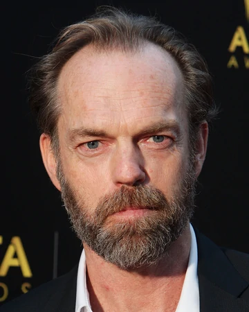
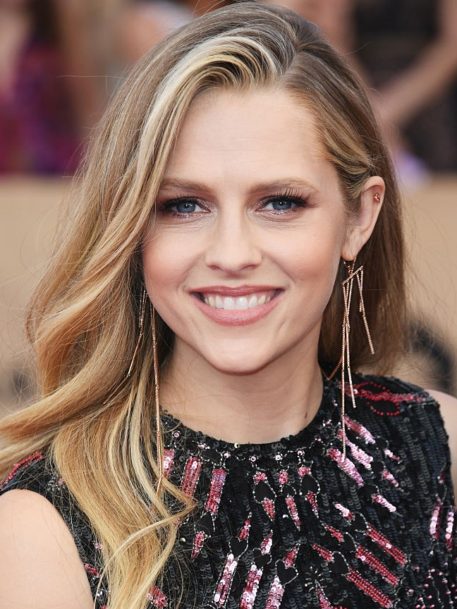
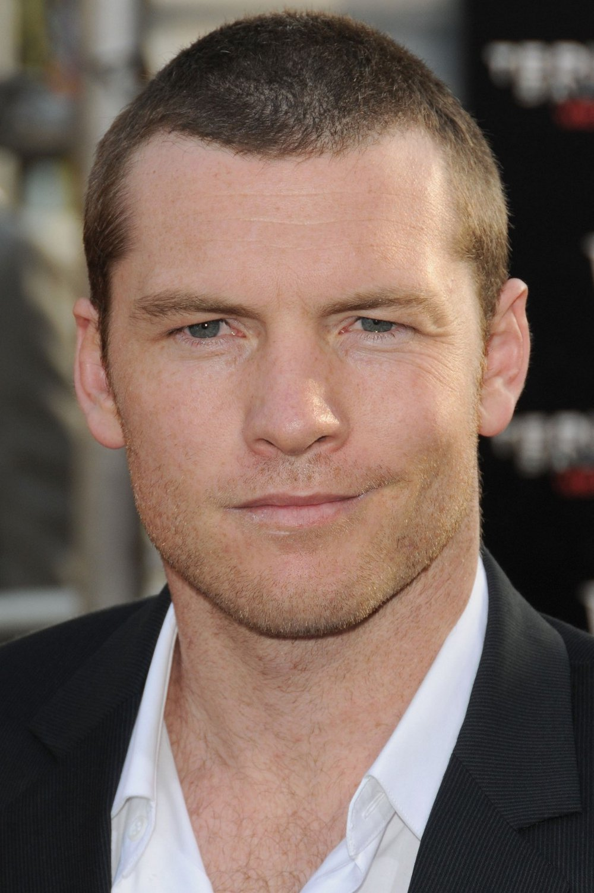
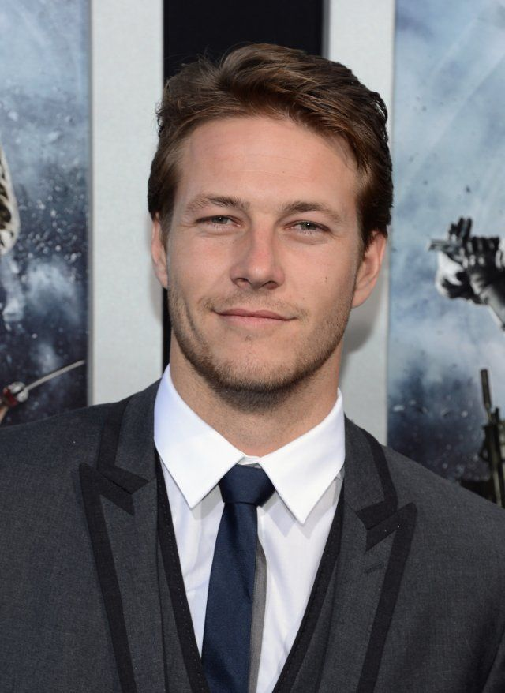
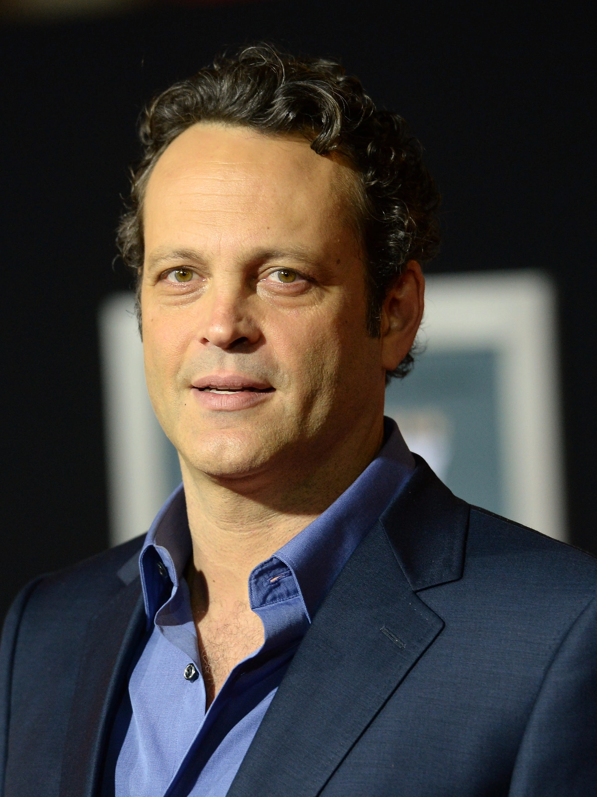
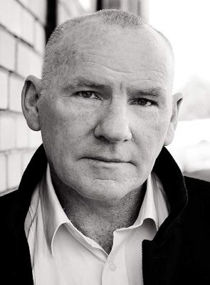
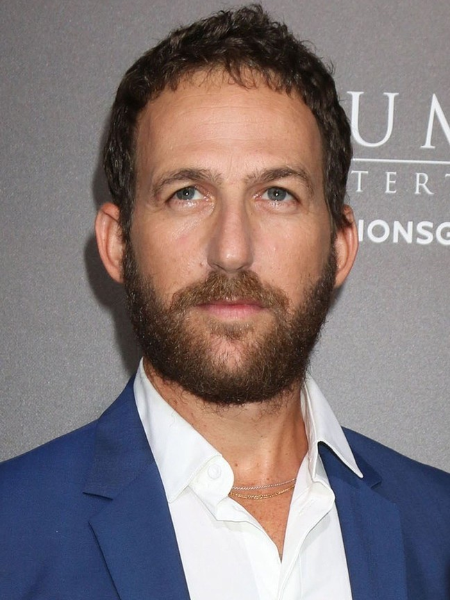

Elenco
Desmond T. Doss
Atuado por: Andrew Garfield
Data de Nascimento: 20 de agosto de 1983
Nascido em: Los Angeles, Califórnia
Profissão: Além de ator, Andrew Garfield também é modelo, produtor cinematográfico e narrador (personagem principal do filme Até o Último Homem)
Imagem de Andrew Garfield
Tom Doss
Atuado por: Hugo Weaving
Data de Nascimento: 4 de abril de 1960
Nascido em: Nigéria, Ibadan
Profissão: Hugo Weaving é ator e dublador

Imagem de Hugo Weaving
Dorothy Schutte
Atuado por: Teresa Palmer
Data de Nascimento: 26 de fevereiro de 1986
Nascida em: Austrália, Adelaide
Profissão: Atriz, modelo, produtora cinematográfica e escritora

Imagem de Teresa Palmer
Capitão Glover
Atuado por: Sam Worthington
Data de Nascimento: 2 de agosto de 1976
Nascido em: Reino Unido, Godalming
Profissão: Ator, produtor cinematográfico e roteirista

Imagem de Sam Worthington
Smitty Ryker
Atuado por: Luke Bracey
Data de Nascimento: 26 de abril de 1989
Nascido em: Austrália, Sydney
Profissão: Ator

Imagem de Luke Bracey
Sargento Howell
Atuado por: Vince Vaughn
Data de Nascimento: 28 de março de 1970
Nascido em: Minnesota, Mineápolis
Profissão: Ator, comediante, prodtor cinematográfico, roteirista, produtor de televisão e ativista político

Imagem de Vince Vaughn
Coronel Sangston
Atuado por: Robert Morgan
Data de Nascimento: 01 de janeiro de 1964
Nascido em: Reino Unido, Bromley
Profissão: Ator, diretor de cinema, animador, produtor cinematográfico, roteirista, dublador e montador

Imagem de Robert Morgan
Irv Schecter
Atuado por: Ori Pfeffer
Data de Nascimento: 28 de julho de 1975
Nascido em: Jerusalém
Profissão: Ator

Imagem de Ori Pfeffer
Voltar para o topo